poesía latinoamericana
Poemas sobre el amor que también desgarra.
El proyecto
Vínculos reúne cuatro voces esenciales de la poesía latinoamericana alrededor de una misma pregunta: qué queda del amor cuando se lo mira de cerca, sin suavizarlo.
No es una antología del costado amable del vínculo amoroso, sino de su intensidad, su espera y su desgarro. El cuerpo aparece como territorio de encuentro y de pérdida — el lugar donde el amor deja su huella aunque ya no esté.
Un libro pensado para leerse como se mira: deteniéndose en lo que queda a medio decir.
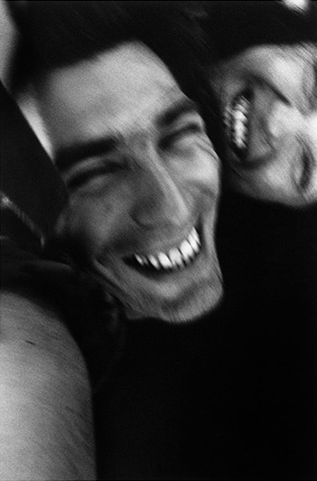
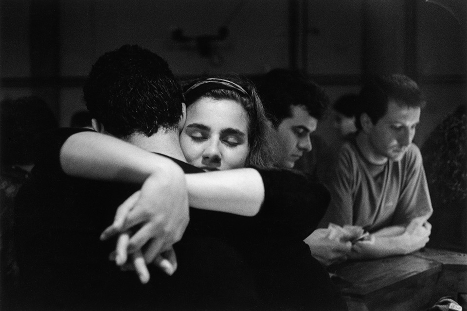
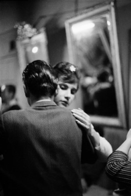
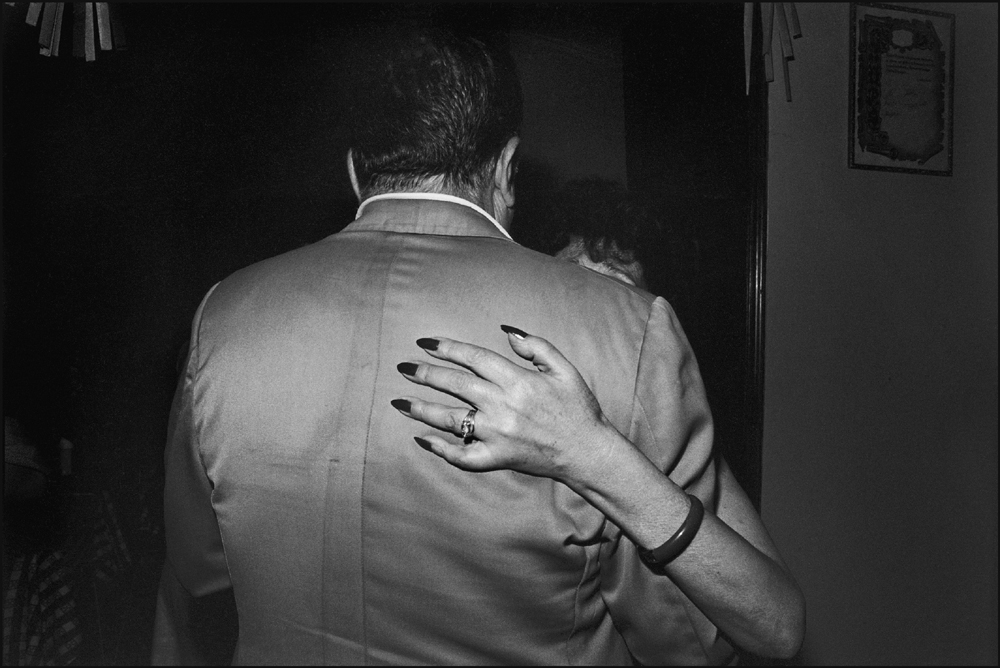
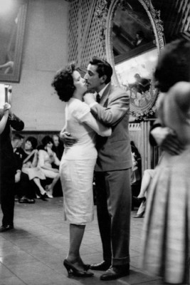
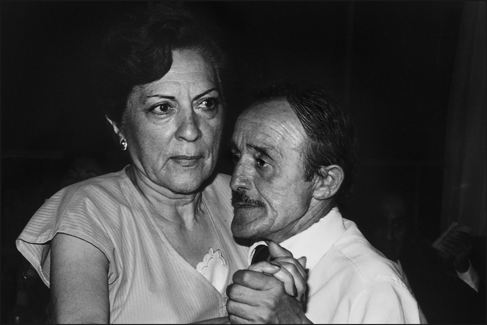
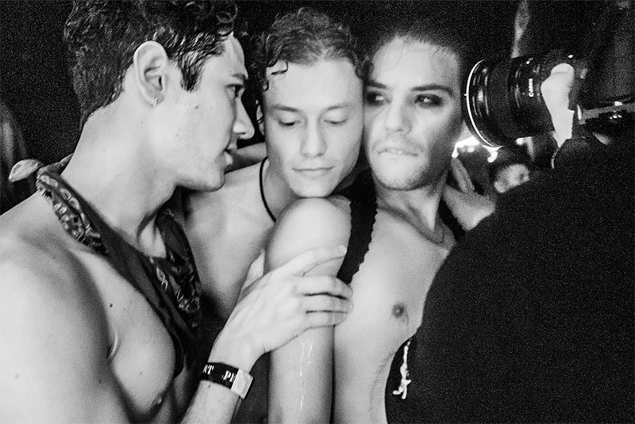
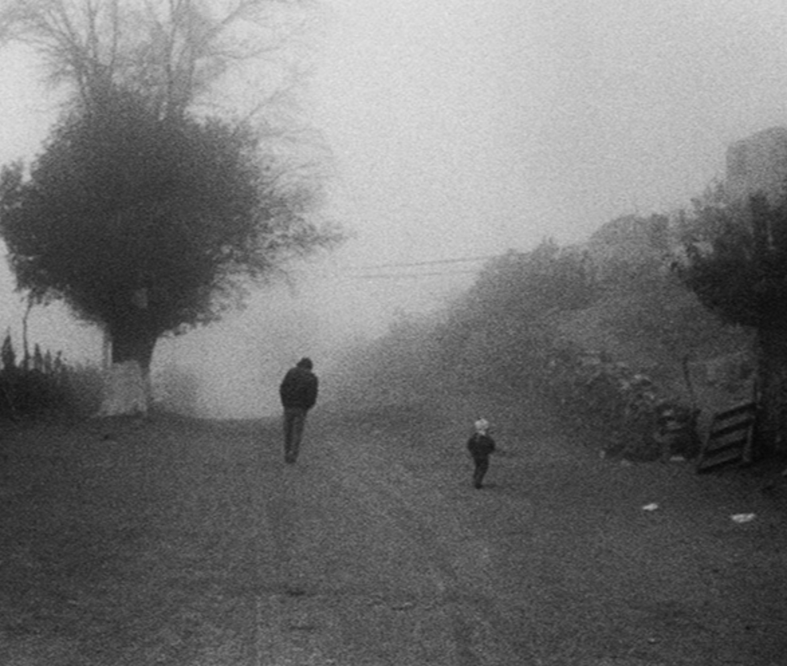
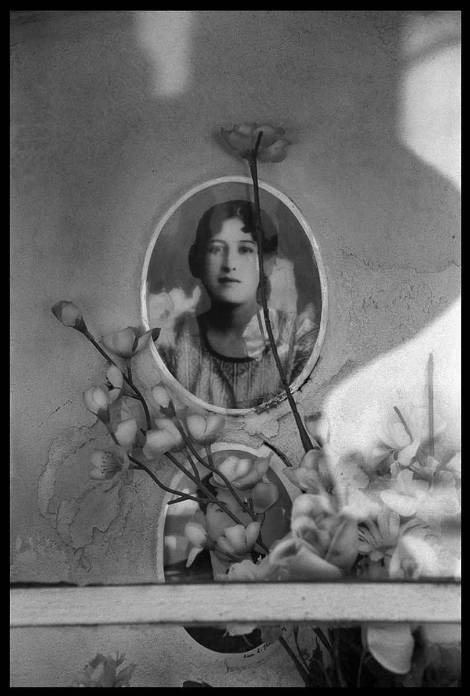
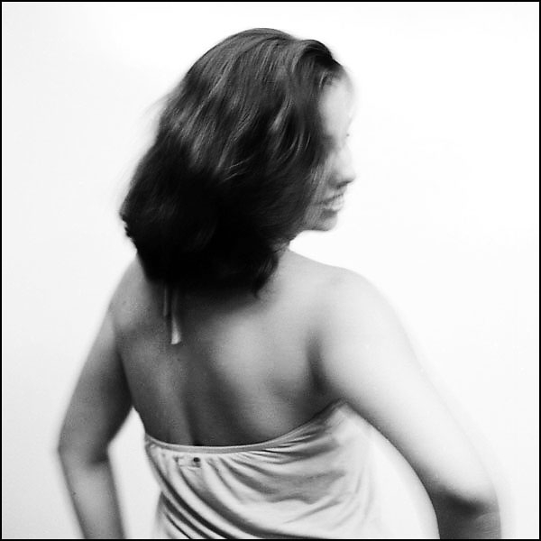
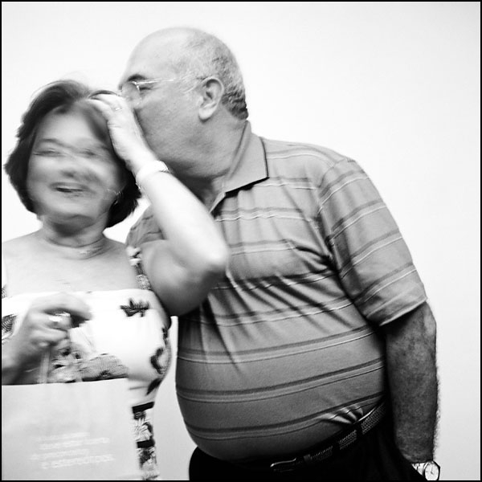
Una de las voces mayores de la poesía uruguaya del siglo XX. En Poemas de amor escribe la pasión sin adorno: la espera, la entrega y la certeza de que nada dura.
Su Poesía completa recorre el deseo, el cuerpo y la ausencia con una precisión que nunca deja de doler.
En Salvo el crepúsculo, el maestro del relato breve revela su costado más lírico e íntimo.
22 poemas · tres autores · una misma intemperie
Un objeto para leer y para mirar, pensado para acompañar de cerca.
Quiero mi ejemplar